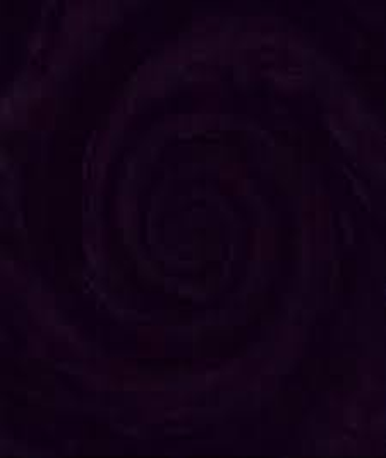

Почему люди не помнят всего, что с ними происходило, начиная с утробы матери? Почему далёкое детство всплывает в памяти лишь редкими эпизодами? Ответ на эти вопросы прост. Пустота... Все мы когда-то там бывали. Это такое место, где вы способны забыть абсолютно всё. И вы попадаете туда глубокой ночью, когда крепко спите и вам ничего не снится. Попасть туда можно и днём, если удастся вздремнуть и провалиться в сон.
Тому, что это место — Пустота — существует, есть доказательство. Закрывая глаза и глядя вперёд, мы видим какие-то мерцания, а иногда и калейдоскоп сменяющихся узоров. Это и есть обрывки наших потерянных когда-то воспоминаний. Пустота предлагает их посмотреть. Но сами воспоминания, не их разрозненные фрагменты, вы в Пустоте теряете навсегда. Это происходит потому, что в Пустоте напрочь отсутствует понятие времени. Его просто нет там.
В Пустоте всё же кое-кто живёт. Имя этих существ - фантомы. Помните такие моменты, когда вы откуда-то падали во сне и резко от этого просыпались? Это происходит потому, что фантомы, завидев вас в Пустоте, любят покатать вас на себе. Делают они это от скуки, ведь заняты они, когда едят, а питаются они человеческой бессонницей.
Главная задача фантомов - это следить, чтобы вы не застряли в Пустоте и не потеряли там все ваши воспоминания. Если фантомы чувствуют, что вы провалились слишком глубоко и можете всё забыть, то они намеренно вас роняют. Именно поэтому вы просыпаетесь. Но иногда вы падаете просто потому, что вам попался неуклюжий фантом.
Не надо слишком переживать из-за того, что вы не смогли выспаться. Не надо ненавидеть бессонные ночи. Они так необходимы фантомам, чтобы не умереть с голоду и быть готовыми спасать нас из Пустоты.
